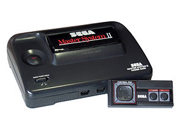
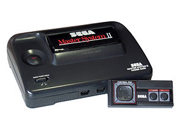

US$199.99 (equivalent to US$470 in 2018)
CA$240 (equivalent to CA$510 in 2018)
US$199.99 (equivalent to $460 in 2018)
£99.99 (equivalent to £280 in 2018)
- JP: July 15, 1983
- NZ: 1983
- JP: July 15, 1983
- USA: October 18, 1985
- NA: September 1986
- EU: September 1986
- WW: 1987
- JP: October 20, 1985
- NA: October 1986
- WW: June 1987
- NA: May 1986
- WW: July 1987
- Cartridge
- Cassette (with keyboard attachment)
- Data card (Card Catcher required)
- Cartridge
Famicom Disk System:
- 3″ floppy disk (Japan only)
- Cartridge
- Data card (first model only)
Super Mario Bros. 3 , 18 million (as of May 21, 2003)
Alex Kidd in Miracle World (pack-in)
Sonic the Hedgehog (pack-in)
- Bike Handle Controller
- Card Catcher
- Sega Handle Controller
- Sega Rapid Fire Unit
- SK-1100
- Famicom Disk System (Japan only)
- NES Advantage
- NES Four Score
- NES Max
- NES Satellite
- NES Zapper
- NES Power Pad
- NES R.O.B.
- Famicom 3D System (Japan only)
- More...
- Light Phaser
- SegaScope 3D Glasses
- Sega Control Stick
- Sega Handle Controller
- Sega Paddle Control
- Sega Pro Action Replay
- Sega Remote Control System
- Sega Rapid Fire Unit
- Sega SG Commander
- Sega Sports Pad
- Atari XG-1 Light Gun
3.58 MHz NTSC (3.55 MHz PAL )
1.79 MHz (1.66 MHz PAL)
4 MHz
1.19 MHz or 1.79 MHz
- Atari MARIA
- Atari TIA (Television Interface Adaptor)
- Ricoh 2A03/2A07
Famicom Disk System:
- Nintendo 2C33 (Japan only)
- Yamaha VDP PSG ( SN76496 )
Japan only:
- Yamaha YM2413
- Atari TIA
Optional cartridge chip:
- Atari POKEY
3 KB RAM
- 1 KB main RAM
- 2 KB video RAM
4.277344 KB (4380 bytes ) RAM
- 2 KB main RAM
- 2 KB video RAM
- 256 bytes sprite attribute RAM
- 28 bytes palette RAM
Upgrades:
- MMC chips: Up to 8 KB work RAM and 12 KB video RAM
- Famicom Disk System: 32 KB work RAM, 8 KB video RAM
24.03125 KB (24,608 bytes) RAM
- 8 KB main XRAM
- 16 KB video XRAM
(256 bytes sprite attribute table) - 32 bytes palette RAM
4 KB RAM
- 4 KB main RAM
(200 bytes line buffer )
- Resolution : 256×192
- Sprites : 32 on screen (4 per scanline ), 8×8 or 8×16 pixels , integer sprite zooming up to 16×32 pixels
- Colors on screen : 16 simultaneous (1 color per sprite)
- Palette : 21 colors
- Background: Tilemap playfield, 8×8 tiles
- Resolution: 256×224 or 256×240
- Sprites: 64 on screen (8 per scanline), 8×8 or 8×16 pixels, sprite flipping
- Colors on screen: 25 simultaneous (4 colors per sprite)
- Palette: 53 colors
- Background: Tilemap playfield, 8×8 tiles
- Scrolling : Smooth hardware scrolling, vertical/ horizontal directions
MMC chips: IRQ interrupt, diagonal scrolling, line scrolling, split‑screen scrolling
- Resolution: 256×192, 256×224, 256×240
- Sprites: 64 on screen (8 per scanline), 8×8 to 16×16 pixels, integer sprite zooming up to 32×32 pixels
- Colors on screen: 32 simultaneous (16 colors per sprite)
- Palette: 64 colors
- Background: Tilemap playfield, 8×8 tiles, tile flipping
- Scrolling: Smooth hardware scrolling, vertical/horizontal/diagonal directions, [28] IRQ interrupt , line scrolling , split‑screen scrolling
- Resolution: 160×200 or 320×200
- Sprites: Display list , 100 sprites (30 per scanline without background)
- Colors on screen: 25 simultaneous (1, 4 or 12 colors per sprite)
- Palette: 256 colors (16 hues , 16 luma )
- Scrolling: Coarse scrolling, vertical/horizontal directions
- Three square wave channels/voices
- One noise generator
- Two square wave channels
- One triangle wave channel
- One noise generator
- One DPCM channel, 6-bit audio , 4.2 to 33.5 kHz sampling rate
Japan only upgrades:
- Capability to extend audio capacity via cartridge chip
- One wavetable synthesizer (Famicom Disk System)
- Three square wave channels
- One noise generator
Japan only:
- Two operator FM synthesizer
- Nine FM synthesis channels
- Two square waves
Optional cartridge chip:
- Four square wave channels
- One noise generator